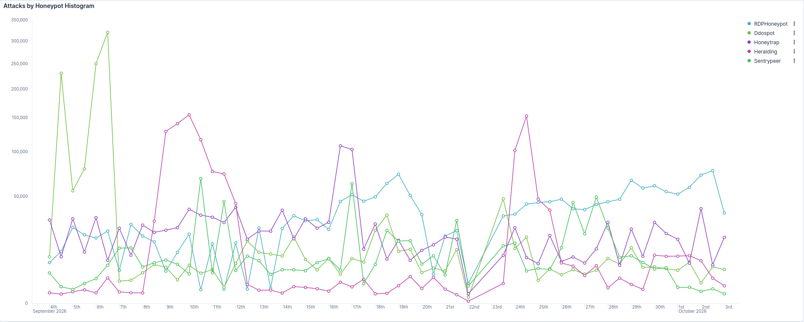
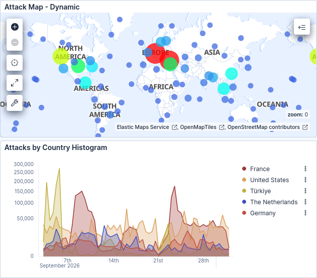
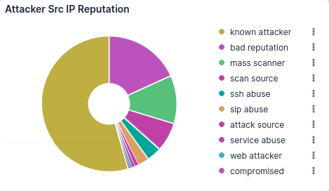
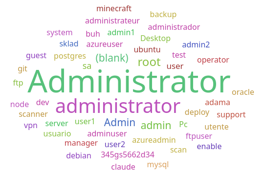
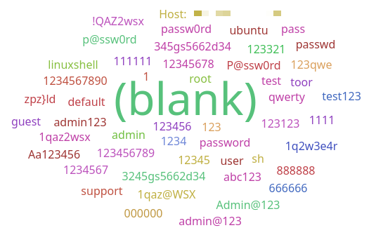
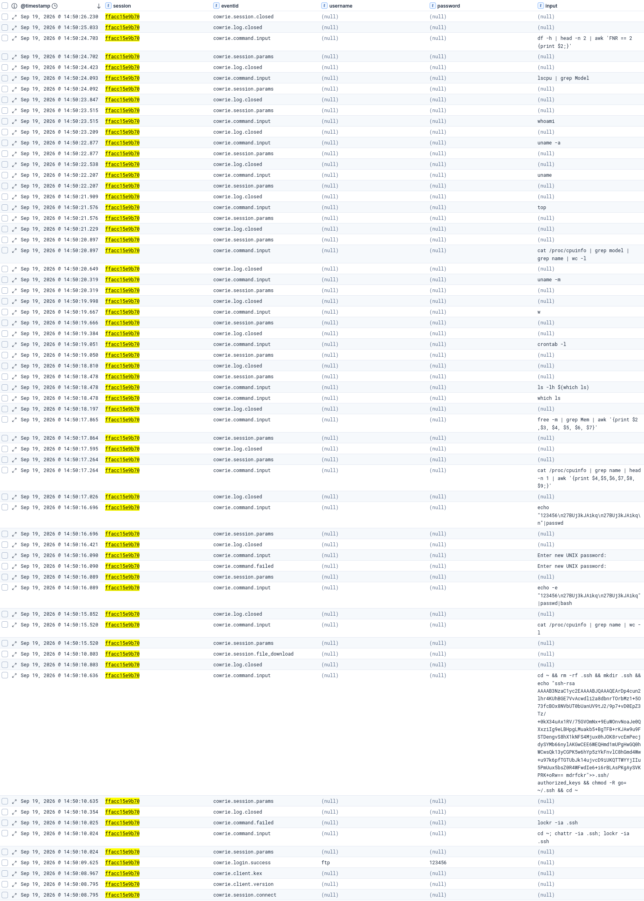
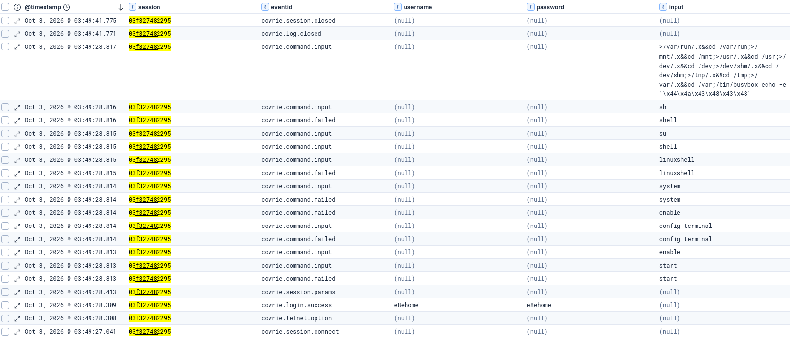

Note: Everything here was collected passively by a honeypot I ran on a server I rented. I never ran any of the malware it caught, attacking IP addresses are partially redacted, and indicators of compromise are defanged so nothing in this report is clickable by accident.
Executive summary
For 30 days, from September 3 - October 3, 2026, I ran a decoy server on the open internet built to look like more than a dozen exposed services, and recorded everything that tried to break in. It logged about 7.85 million honeypot events, roughly three every second, around the clock.
What I found
- Remote Desktop was the top target, and it got worse. RDP drew about a quarter of all attacks, and its volume roughly tripled over the month.
- A large share of the traffic came from hosting and data-center networks. One hosting company, Contabo, sent about 23% of everything, and a single Contabo server sent 6.8% on its own.
- Attackers guessed passwords instead of exploiting bugs. The username "Administrator" alone was tried 275,951 times, while only 16 alerts all month matched a known vulnerability.
- Bots that got in went for crypto mining and staying power. They checked the hardware, dropped miners like RedTail, swapped in their own SSH keys 557 times, and even changed the account password so nobody else could get back in.
- Phones, routers and file sharing were targets too. Bots tried to place fraudulent calls through a fake phone system, logged into a fake router with its factory password in half a second, and infected machines kept probing for Windows file sharing.
Attackers also used my sensor as a reflector in what looks like a DDoS attack against Turkish networks. The honeypot answered those requests, so it probably passed some of that traffic along, which is the one thing I would set up differently next time.
What to do about it
- Take RDP off the internet and put it behind a VPN with MFA.
- Turn on MFA everywhere, rename or disable built-in admin accounts, and use long passphrases instead of relying on complexity rules.
- Close anything else that doesn't need to face the internet: file sharing, databases, phone systems and router admin pages.
The full list is in the recommendations section.
Scope and methodology
I ran one T-Pot sensor on a rented server in Seattle for a month and analyzed everything that hit it in Kibana.
The sensor
The sensor was a Vultr VPS with 4 vCPUs, 16 GB of RAM and 240 GB of NVMe storage, running Debian 13 and T-Pot 24.04.1. I chose my own set of honeypots with T-Pot's customizer instead of using the stock Standard build, and the full list is in the services table. I left out Mailoney, T-Pot's email honeypot, on purpose so I did not expose the dedicated port-25 SMTP service.
I also left T-Pot's ewsposter running, so attack data was shared with Deutsche Telekom's community sensor network during the month.
Exposure and lockdown
Vultr's firewall let TCP and UDP ports 1 through 64,000 in from anywhere. That's the bait. Everything above it, including T-Pot's admin ports, was blocked from the internet, and IPv6 was blocked entirely.
I managed the server over Tailscale. The sensor was tagged so it could receive connections from my devices but the sensor could not initiate connections to other tailnet devices. I confirmed that two ways: Tailscale's policy preview, and a TCP connection test from the sensor that timed out.
Collection window and filtering
I collected from 00:00 UTC on September 3rd to 10:00 UTC on October 3rd, 2026, about 30 days. All times in this report are UTC. The sensor actually went live on August 30th, but the first few days had most likely aged out of T-Pot's 30-day retention by the time I did the analysis.
I excluded my own Tailscale traffic with a pinned filter in Kibana. All counts are honeypot events unless I say otherwise.
Limits
- One sensor, one IP and one region, so this is a single vantage point.
- IPv4 only.
- I left out Mailoney, T-Pot’s dedicated SMTP honeypot, so I did not expose the dedicated port-25 SMTP service.
- Around September 21st and 22nd the sensor collected almost nothing for about a day, and some containers restarted during the month. Totals around those times are low.
- Suricata sees traffic in both directions, so its event counts include my own sensor's replies. I don't treat them as attack counts.
- Country data shows where a server is hosted, not who's running it.
- I never ran any of the malware. Samples stayed on the sensor, and I identified them by filename and hash.
- Some interval figures are read off charts and rounded, and I say so where that happens.
Attack volume and timeline
The T-Pot ran for 30 days, from September 3 - October 3, 2026. Over that time frame, the honeypots received 7.85 million events averaging about 258,000 events a day, or about three events per second. The count covers all honeypot events while only excluding my management traffic.

Remote Desktop attention grew all month. RDP traffic roughly tripled, from about 20,000 events per 12-hour interval in the first week to between 55,000 and 77,000 in the last. That pattern is consistent with the sensor's address being added to more target lists the longer it stayed online.
Short campaigns produced the biggest spikes.
- Ddospot logged about two-thirds of its 1.39 million events between September 4th and the 6th. It peaked near 320,000 in a single interval, then dropped to a low baseline.
- Heralding rose from a few thousand events per interval to as many as 155,000 during September 8th to the 12th. It surged again to about 150,000 during September 23rd to the 25th. Those two bursts account for most of its 1.22 million events.
- Honeytrap held a steadier baseline of 25,000 to 40,000 per interval but roughly tripled on September 16th and 17th.
The monthly total doesn't tell the full story on how traffic arrived to my honeypot. Ddospot and Heralding rank second and fourth by volume largely because of a few days of campaign activity. RDP's first place reflects sustained, growing attention.
There is a noticeable dip around September 22nd where all honeypots fell to almost zero attacks. This finding points to a service disruption, not an international holiday for cyber attackers. The unaccounted totals for this day will hurt the overall attack number, but I will not worry about them for now.
Source analysis
Most of the traffic came from a short list of hosting companies. Contabo alone sent about 23% of all events, and the top 10 networks together sent 45%.
| ASN | Network | Events | Share of all events |
|---|---|---|---|
| 51167 | Contabo GmbH | 1,787,959 | 22.8% |
| 14987 | Rethem Hosting LLC | 320,963 | 4.1% |
| 201814 | MEVSPACE sp. z o.o. | 230,645 | 2.9% |
| 49870 | Alsycon B.V. | 202,382 | 2.6% |
| 197170 | TechTies Inc. | 193,732 | 2.5% |
| 396982 | Google LLC | 190,356 | 2.4% |
| 8560 | IONOS SE | 170,885 | 2.2% |
| 57844 | SPDNet Telekomunika | 155,066 | 2.0% |
| 14956 | RouterHosting LLC | 139,635 | 1.8% |
| 23923 | Agni Systems Limited | 132,558 | 1.7% |
Contabo's 1.79 million events were more than five times the next network's 321,000. Most of the top 10 are hosting or cloud companies, not home internet providers, so this traffic came from servers in data centers. Those servers may be rented by attackers or compromised; the data cannot tell which.
One network on that list needs an asterisk. SPDNet, a Turkish provider, only shows up in the DDoS honeypot's traffic, and that honeypot saw 319,098 different source addresses, far more than any other. In a reflection attack the source address is forged to point at the victim, so SPDNet was most likely on the receiving end, not doing the attacking.
Passive OS fingerprinting tells the same story. Most attacking hosts that p0f could identify fingerprinted as Linux, which is typical of servers rather than home PCs. The data suggests that traffic was concentrated at the address level too. The top ten IP addresses sent 1.54 million events, about a fifth of the total, and the busiest sent 537,381 on its own. Funny enough, the top IP, 5.189.128.x, is also owned by Contabo GmbH according to MXToolBox. This means that IP sent 6.8% of all attacker traffic, and also sent about 30% of the top offender's ASN traffic.
| Source address | Events | Share of all events |
|---|---|---|
| 5.189.128.x | 537,381 | 6.8% |
| 194.50.16.x | 186,614 | 2.4% |
| 149.50.115.x | 179,192 | 2.3% |
| 119.148.49.x | 132,535 | 1.7% |
| 213.136.71.x | 118,562 | 1.5% |
| 144.172.97.x | 113,900 | 1.5% |
| 77.83.38.x | 85,081 | 1.1% |
| 84.32.50.x | 66,292 | 0.8% |
| 80.94.95.x | 62,806 | 0.8% |
| 62.169.25.x | 58,304 | 0.7% |
The IP addresses are partially redacted because many attacking hosts are compromised machines belonging to third parties and I do not believe that doxing them is the correct way to solve this issue.
France, the United States, Türkiye, the Netherlands and Germany were the top five source countries, followed by Poland, Bulgaria, Russia, Ukraine and China. The term country in this context means where a server is hosted, not where its operator sits. Similar to how I am located in Colorado but my honeypot is hosted in Seattle, Washington. It says more about data center locations than about who is attacking.

Addresses already flagged as known attackers made up the largest share of events, ahead of bad-reputation addresses and mass scanners such as research crawlers.

Credential attacks
Bots mostly guessed Windows administrator accounts and weak passwords, and "Administrator" was the most-tried username.


"Administrator" (275,951) and "administrator" (138,917) (capital and lowercase "a") were the two most-tried usernames, far ahead of root at 46,207. That fits RDP being the most-attacked service, since those are Windows account names. Database admin accounts drew heavy guessing too, led by sa, SQL Server's built-in administrator, at 14,043.
Some bots tried the admin account in other languages: administrador, administrateur, utente, usuario. Others guessed names a small office might use, such as buh (Russian shorthand for accountant) and sklad (warehouse). Cloud defaults like ubuntu and azureuser showed up as well, along with service accounts for postgres, oracle, mysql, git and even minecraft.
A blank password appears 545,271 times, but that comes from RDP connections, where the honeypot records a username but no password. I confirmed it by filtering to just the RDP honeypot, where the password field is blank. Among real guesses, 123456 led with 4,791 attempts, followed by 123, 1234, password and root.
Several common attempts would pass a typical Windows complexity rule yet are trivially guessed, such as P@ssw0rd (565 attempts), Admin@123, 1qaz@WSX and Aa123456. Complexity rules alone do not stop wordlist attacks.
The string 345gs5662d34 appeared as both a username and a password, alongside its variant 3245gs5662d34, at 530 and 524 attempts as passwords. It is a long-documented botnet marker seen in honeypots worldwide, and the SANS Internet Storm Center noted the username arrives with only one password. Its origin is disputed: some researchers tie it to Polycom CX600 IP phones, others to DVR firmware.
Router factory defaults also appear. One Telnet session logged in with e8ehome/e8ehome, a known router default, and is walked through in the incident deep-dive.
Some password entries are not passwords at all. Shell commands such as sh and linuxshell show up, likely from bots firing their command sequence before a login completed. One entry is an HTTP header aimed at the sensor's own Telnet port, from a scanner speaking the wrong protocol.
Beyond SSH, Telnet and RDP, Heralding logged 1.22 million events against the email, proxy, database and VNC services it emulated. Its captured credentials were mostly defaults against SOCKS5 proxies and PostgreSQL, led by postgres/postgres at 73 attempts. Its two big spikes line up with VNC traffic on port 5900, though VNC doesn't appear among its top captured credentials.
Post-login behavior
Once bots got into Cowrie's fake shell, they mostly did two things. They checked whether the box was worth using for crypto mining, and they tried to lock in their own SSH access.
Cowrie logged 650,857 events from about 6,800 addresses but only 78 distinct SSH client fingerprints (HASSH).
| Command | Times run | What it does |
|---|---|---|
uname -a 2>/dev/null | 755 | Reports the operating system, hiding errors |
config terminal | 712 | A router command; the bot assumed it had reached a network device |
uname -a | 577 | Reports the operating system |
cd ~; chattr -ia .ssh; lockr -ia .ssh | 558 | Unlocks the SSH key folder so it can be overwritten |
lockr -ia .ssh | 558 | The same unlock, using a tool the botnet runs alongside chattr |
sh | 555 | Tries to open a shell |
cat /proc/cpuinfo | grep name | wc -l | 550 | Counts CPU cores |
uname -m | 546 | Reports CPU architecture |
cat /proc/cpuinfo | grep model | grep name | wc -l | 544 | Counts CPU cores a second way |
cat /proc/cpuinfo | grep name | head -n 1 | awk '{print $4,$5,$6,$7,$8,$9;}' | 544 | Reads the CPU model name |
The uname and /proc/cpuinfo commands pull the CPU architecture, core count and model. A miner installer needs exactly that to pick the right build and decide whether a box is worth the trouble. The miner samples Cowrie caught came in separate arm7, arm8 and i686 builds, so the architecture check is doing real work.
The chattr and lockr commands remove the immutable flag from the .ssh folder. That's the first step of the mdrfckr campaign. Next it wipes the existing keys and adds its own, so the operator can log back in whenever they want. Researchers tie it to Outlaw, also tracked as Dota, a Linux crypto-mining botnet whose SSH key was first seen in 2018.
Cowrie caught the full key install too, 557 times, which is nearly one for every unlock. It's the exact same public key other researchers have documented, with mdrfckr tagged on the end.
The campaign hit steadily from September 4th to the 20th and peaked on the 19th. After the collection gap on the 21st I didn't see it once, and I can't tell whether the botnet moved on or something about the sensor changed after the restart.
One session from September 19th shows the whole script from start to finish, and it only took 17 seconds.

The bot logged in over SSH as "ftp" with the password "123456", unlocked .ssh, wiped it and planted the mdrfckr key. Then it changed the account's password to "27BUj3kJAikq" so nobody could get back in with the old one. I could not find that password in any public sources, so it may be a previously undocumented indicator.
After that it ran more than a dozen checks: CPU count and model, memory, disk size, running processes, who else was logged in, and whether any cron jobs already existed. It even checked the size of the ls binary, probably to figure out whether it was on a real system. Each command arrived as its own SSH request a little over half a second after the last.
Six of the ten commands in the table above come from this one script, which is why their counts are nearly identical.
config terminal came in second at 712. It's the same thing I saw in the deep-dive session: bots throwing router commands at whatever answers, without checking what it is.
Services and exploits
Remote Desktop took the most punishment, about a quarter of all events on its own. Actual exploit attempts barely showed up. This was a month of password guessing and scanning.
| Honeypot | Pretends to be | Events | Share |
|---|---|---|---|
| RDPHoneypot | Windows Remote Desktop (3389) | 1,887,868 | 24.1% |
| Ddospot | DNS, NTP, SSDP and CHARGEN over UDP | 1,391,114 | 17.7% |
| Honeytrap | Any TCP port nothing else is using | 1,305,044 | 16.6% |
| Heralding | Email, SOCKS5 proxy, PostgreSQL, VNC | 1,219,245 | 15.5% |
| Sentrypeer | SIP phone systems (5060) | 678,578 | 8.6% |
| Cowrie | SSH and Telnet (22, 23) | 650,857 | 8.3% |
| Dionaea | SMB, SQL Server, MySQL, FTP and others | 304,899 | 3.9% |
| ConPot | Industrial control equipment | 166,915 | 2.1% |
| Ciscoasa | Cisco ASA VPN | 65,327 | 0.8% |
| H0neytr4p | HTTPS web server | 64,528 | 0.8% |
| Honeyaml | Web API | 49,467 | 0.6% |
| Tanner | Web application | 40,927 | 0.5% |
| Redishoneypot | Redis database | 12,963 | 0.2% |
| Adbhoney | Android Debug Bridge (5555) | 4,589 | 0.1% |
| Miniprint | Network printer (9100) | 3,529 | <0.1% |
Who hit what
The networks behind each service were surprisingly specialized. Pulling the top sources from each honeypot's dashboard:
| Service | Top networks | What they are |
|---|---|---|
| RDP | Contabo, MEVSPACE, ReliableSite.Net | Hosting companies |
| SIP | Cherry Servers, IONOS, RouterHosting | Hosting companies |
| SSH and Telnet | TechTies, Banatsync, Kabat | Led by a data center |
| DDoS reflection | SPDNet and other Turkish networks | Probably victims, with forged addresses |
| SMB | Chinanet, China Mobile, China Telecom, PLDT | Regular consumer and national ISPs |
The type of network lines up with the type of attack. RDP and SIP brute force came from rented servers, which is what you'd expect from someone running a campaign. SMB came from ordinary ISP ranges across Asia and South America, which looks more like infected PCs spreading on their own.
RDP
RDP pulled 1.89 million events from only about 1,700 addresses, roughly a thousand attempts each. The single busiest address, a Contabo server, sent 537,381 of them. Almost every connection had a blank client hostname, but one leaked a name, EMP-LAP-0015, which reads like a company laptop. I can't tell whether that machine was hijacked or belongs to whoever ran the attack.
DDoS reflection
Ddospot pretends to be the kind of UDP services attackers bounce traffic off in reflection attacks. Almost all of its traffic was DNS on port 53, and nearly every DNS request asked about the same domain, dhitc[.]com. The NTP requests included monlist, an old command that makes a server send back far more data than it received, and the SSDP requests were M-SEARCH discovery packets.
The sources are the interesting part. Ddospot logged about 319,000 different addresses, roughly four requests each, concentrated in Turkish networks. In a reflection attack the attacker forges the victim's address as the source, so this looks like an attack on Turkish networks that used my sensor as one of its reflectors. Most of it landed between September 4th and the 6th, and Suricata's alerts spiked at the same time, peaking at 1,269,692 in the 12 hours starting September 6th.
After the collection window I sent Ddospot a test DNS query, and it answered with a normal-looking reply. So my sensor probably sent some reflected traffic toward those networks during the attack. That's the one part of this setup I'd change: next time I'd find a way to log these requests without answering them, or leave Ddospot out.
Honeytrap
Honeytrap answers on any port nothing else is using, and its 1.3 million events were spread thin across a long tail of ports. Even the busiest port topped out under 3,000 events in any 12-hour window. That was 5038, the Asterisk Manager Interface used to control Asterisk phone systems, which ties into the toll fraud below. The rest of the top five were 8000, 8081, 9090 and 8888, common ports for web admin panels and proxies.
Port 5038's busiest windows, September 8th to the 11th and September 23rd, line up with Heralding's spikes, so the same campaigns may have been sweeping several services at once.
SIP and VoIP
Sentrypeer's 678,578 events came from roughly 600 addresses, and most were INVITE requests, which try to place a call. That's likely toll fraud. Attackers look for phone systems that will route their calls, then dial premium-rate numbers they get a cut of.
The tools mostly pretended to be real phones from Cisco, Linksys and Avaya. One didn't bother hiding and called itself SipSlaughter. The biggest source was Cherry Servers across three of its networks, about 206,000 events combined, ahead of IONOS and RouterHosting.
The same interest showed up in database guessing. Dionaea saw logins for accounts that VoIP software uses, like asterisk, fusionpbx, kamailio and opensips.
SMB
Dionaea logged 304,899 events, and most of them were SMB on port 445. These came from regular ISPs: Chinanet, China Mobile, China Telecom, PLDT in the Philippines, and providers in Bolivia, Iran and Pakistan. That spread looks like infected computers scanning for new victims on their own, the way SMB worms have kept circulating since WannaCry in 2017. Dionaea also caught SQL Server guessing, mostly against the sa account.
Proxy hunting
Some of the traffic was checking whether my server would relay traffic for someone else. Besides the SOCKS5 password guessing in Heralding, web requests asked my server to fetch IP-echo sites like icanhazip[.]com, api64[.]ipify[.]org and checkip[.]amazonaws[.]com, which is how bots test for open proxies. One of those checks pointed at proxychecker[.]vultr[.]com, so Vultr was probably testing its own customers too.
Exploits barely showed up
Out of about 89 million Suricata events, only 16 alerts matched a known CVE.
| CVE | Alerts | What it is | Published |
|---|---|---|---|
| CVE-2022-37055 | 1 | Buffer overflow in D-Link GO-RT-AC750 routers, added to CISA's Known Exploited Vulnerabilities list in December 2025 | August 2022 |
| CVE-2020-11910 | 15 | Ripple20 flaw in the ICMPv4 handling of Treck's embedded TCP/IP stack | June 2020 |
The Ripple20 alerts may just be malformed ICMP tripping the rule, since nothing on the sensor runs Treck's stack. Suricata only tags what its rules recognize, so this undercounts, but the gap between 16 and millions of login attempts is hard to miss.
Most of Suricata's busiest alerts were about truncated or out-of-order packets, which is network noise. Its single biggest source address was my own sensor, because Suricata watches traffic in both directions.
Malware and payloads
Nearly everything I could identify was a crypto miner. Bots dropped miners built for Linux servers and Android devices, plus a few loader scripts I haven't identified yet. Over the month Cowrie saved 61 distinct files with content, Adbhoney 24 and Dionaea 47.
| Payload | Caught by | Downloads | What it is |
|---|---|---|---|
| kla.sh | Cowrie | 116 | Unidentified loader script |
| redtail.arm7, redtail.arm8, redtail.i686 | Cowrie | 20 each | RedTail Monero miner |
| clean.sh | Cowrie | 20 | RedTail's prep script |
| Five files named sshd | Cowrie | 1 to 5 each | Four unidentified, one empty |
| bot.$m | Cowrie | 2 each, from three ports | Unidentified bot loader |
| Ten .raw samples | Adbhoney | 5 to 31 each | Tied to Trinity, also called UFO Miner |
RedTail
The RedTail files match a package other honeypot operators have documented. It gets in by guessing SSH passwords, clean.sh clears out competing miners, and a setup script picks the build that fits the CPU. The miner itself is built on XMRig, an open-source Monero miner. That's why the CPU checks in the post-login section matter: the bot needs to know which build to run. My builds don't match the RedTail hashes other honeypot operators have published, which fits reports that its builds change often.
When I searched for it, setup.sh turned up too. It just fell outside the top downloads. I haven't seen an x86_64 build, which other researchers usually find in the same package.
Loader scripts
The most-downloaded file was kla.sh, pulled from 160[.]119[.]66[.]206 out of a folder called /bins/, a layout IoT botnet loaders tend to use. The bot.$m downloads came from 176[.]65[.]134[.]121 on ports 7338, 7450 and 8080. The $m was supposed to be replaced with the CPU type before the request went out, and it wasn't, probably because Cowrie's fake shell never ran the command that sets it.
The five files named sshd are a different trick. Naming malware after the SSH service helps it blend into a process list. One of them hashed to the SHA-256 of an empty file, so that download came back with nothing.
UFO Miner on Android
Adbhoney pretends to be an Android device with its debug port open on 5555. It logged 4,589 events from about 440 addresses, and the commands match Trinity almost line for line: clear /data/local/tmp, push and run a binary called trinity, install ufo.apk, then start com.ufo.miner. UFO Miner is a headless mining app that spreads to any Android device it can reach over that port, and it's been around since 2018.
SMB payloads
Dionaea saved 47 distinct binaries pushed to it over SMB. I haven't identified them yet, so I'm not naming any families here. One of Dionaea's rotated archives was incomplete, so a few samples may be missing from that count.
MITRE ATT&CK mapping
I only mapped techniques I can point to in the data, and every row lists the evidence behind it. These are from the attacker's side, and many are only attempts, since nothing real got compromised.
| ID | Technique | What I saw | Where |
|---|---|---|---|
| T1595.002 | Active Scanning: Vulnerability Scanning | Probes matching CVE-2022-37055 and CVE-2020-11910 | Suricata |
| T1110.001 | Brute Force: Password Guessing | Hundreds of thousands of guesses against Administrator and root | RDPHoneypot, Cowrie, Heralding |
| T1078.001 | Valid Accounts: Default Accounts | Logins with factory defaults like e8ehome/e8ehome and postgres/postgres | Cowrie, Heralding |
| T1059.004 | Command and Scripting Interpreter: Unix Shell | Scripted command sequences right after login | Cowrie |
| T1082 | System Information Discovery | uname and /proc/cpuinfo checks, about 550 runs | Cowrie |
| T1033 | System Owner/User Discovery | whoami and w in the mdrfckr script | Cowrie |
| T1057 | Process Discovery | top in the mdrfckr script | Cowrie |
| T1222.002 | File and Directory Permissions Modification: Linux and Mac | chattr -ia .ssh, 558 times | Cowrie |
| T1098.004 | Account Manipulation: SSH Authorized Keys | The mdrfckr key written to authorized_keys, 557 times | Cowrie |
| T1531 | Account Access Removal | Account password changed to 27BUj3kJAikq after takeover | Cowrie |
| T1105 | Ingress Tool Transfer | kla.sh, RedTail builds, bot.$m and ufo.apk | Cowrie, Adbhoney |
| T1496.001 | Resource Hijacking: Compute Hijacking | RedTail and UFO Miner | Cowrie, Adbhoney |
| T1498.002 | Network Denial of Service: Reflection Amplification | DNS, NTP monlist and SSDP requests with forged sources | Ddospot |
| T1190 | Exploit Public-Facing Application | One D-Link router exploit attempt | Suricata |
SIP toll fraud doesn't map cleanly to any ATT&CK technique, so I covered it in the services section instead of forcing a fit.
Incident deep-dive: one bot, half a second
One Telnet session on October 3rd shows how little a bot needs. It logged in, fired off its whole script in a few milliseconds, and left 13 seconds later.
| Time | What happened |
|---|---|
| 03:49:27.041 | Connection opens from 178.141.242.x |
| 03:49:28.308 | Telnet setup |
| 03:49:28.309 | Logs in as e8ehome with the password e8ehome |
| 03:49:28.813 | Starts sending commands: start, enable |
| 03:49:28.814 | config terminal, system |
| 03:49:28.815 | linuxshell, shell, su |
| 03:49:28.816 | sh |
| 03:49:28.817 | Probes for a writable folder, then checks for BusyBox |
| 03:49:41.771 | Disconnects without downloading anything |
Times are UTC.

The login
The bot got in on its first try with e8ehome/e8ehome. That's the factory default on the Huawei E8C, a home router China Telecom handed out, and it's been in Mirai-style credential lists for years. NETSCOUT's honeypot research listed it among the most common logins that weren't in the original Mirai source. On my sensor it came up in 37 sessions from 30 different addresses over the month.
The command burst
Half a second after logging in, the bot sent nine commands within about four milliseconds. Nothing human can type that fast.
The first eight are router commands. The bot assumed it had landed in a locked-down router menu and tried every way it knew to break out to a real Linux shell. Cowrie pretends to be a plain Linux server, so it rejected most of them, and the bot never stopped to check what it was talking to.
The writable-folder probe
The last command tries to create an empty hidden file in one folder after another, then moves into the first one where that works:
>/var/run/.x&&cd /var/run;>/mnt/.x&&cd /mnt;>/usr/.x&&cd /usr;>/dev/.x&&cd /dev;>/dev/shm/.x&&cd /dev/shm;>/tmp/.x&&cd /tmp;>/var/.x&&cd /var;/bin/busybox echo -e '\x44\x4a\x43\x48\x43\x48'It works through seven folders, from /var/run to /var, looking for somewhere it can write a payload. Then it runs BusyBox's echo with an escaped string that decodes to DJCHCH. If DJCHCH comes back, the bot knows it's on a real BusyBox system and can read the output, a trick common in Mirai-family loaders. The session ended 13 seconds later with nothing downloaded, so it probably didn't get the answer it was looking for.
What it was
Everything here fits a Mirai-family bot: Telnet, a router default password, a router escape sequence and a writable-folder probe. I didn't capture a binary from this session, so I can't name the exact variant.
Recommendations
If you run a small business, start by finding out what you're exposing. Look up your public IP on Shodan, or ask your MSP to scan it from the outside. Then, in rough order of impact:
- Get RDP off the internet. It was the most-attacked service by far, and the attacks kept growing the longer the sensor was up. Put it behind a VPN or a Remote Desktop Gateway with MFA, and close 3389 at the firewall.
- Turn on MFA and stop leaning on password complexity. P@ssw0rd and Admin@123 pass a standard complexity policy and still sit in attacker wordlists. Long passphrases plus MFA hold up much better.
- Rename or disable the built-in Administrator account and set a lockout policy. Administrator was tried 275,951 times, and bots also guessed it in other languages and tried role accounts like accounting and warehouse logins.
- Close SMB (445) to the internet and keep Windows patched. The SMB traffic looked like infected machines spreading on their own, the same kind of worm traffic that's been around since WannaCry.
- Change router and IoT default passwords and turn off Telnet and remote management. A bot logged into my sensor in half a second with a router's factory password.
- Lock down phone systems. Don't expose SIP or the Asterisk Manager port (5038) to the internet, accept traffic only from your VoIP provider, block international and premium-rate calling you don't need, and set spending alerts with your provider.
- Keep databases off the internet. SQL Server's sa account and postgres/postgres were both guessed. Databases should only listen on internal networks.
- Use SSH keys, turn off password logins and watch authorized_keys. The mdrfckr bot wiped and replaced SSH keys 557 times on my sensor, then changed the account password. An alert on changes to authorized_keys, or on chattr being run, would catch it.
- Don’t expose recursive DNS, unnecessary NTP, or SSDP services to the internet. If public DNS or NTP is required, configure it so it cannot be abused for amplification. Those services are what attackers bounce DDoS traffic off, and an exposed one makes you part of someone else's attack. My own sensor is proof of that.
- Consider limiting hosting networks on exposed admin services. A handful of hosting companies sent nearly half of all traffic. If your remote access only needs to work from home and office connections, you can be much stricter with data center ranges.
Appendix
Indicators of compromise
Network indicators are defanged, and I've left out full attacking addresses since many belong to compromised machines.
| Type | Indicator | Context |
|---|---|---|
| URL | hxxp://160.119.66[.]206/bins/kla.sh | Loader script, 116 downloads |
| URL | hxxp://176.65.134[.]121:7338/bot.$m | Bot loader |
| URL | hxxp://176.65.134[.]121:7450/bot.$m | Bot loader |
| URL | hxxp://176.65.134[.]121:8080/bot.$m | Bot loader |
| SSH key | SHA256:MkYY9qiVsFGBC5WkjoClCkwEFW5iSjcGQF7m4n4H7Cw | The captured mdrfckr key, same fingerprint as reported by OffSeq |
| Credential | 27BUj3kJAikq | Password the mdrfckr script set on the hijacked account |
| Credential | 345gs5662d34 and 3245gs5662d34 | Long-running botnet credential marker |
| Credential | e8ehome / e8ehome | Huawei E8C router default |
| DNS query | dhitc.com | Domain in nearly all DDoS reflection requests |
| Android package | com.ufo.miner | UFO Miner |
Adbhoney sample hashes, taken from its saved filenames:
sha256,downloads
d7188b8c575367e10ea8b36ec7cca067ef6ce6d26ffa8c74b3faa0b14ebb8ff0,31
a1b6223a3ecb37b9f7e4a52909a08d9fd8f8f80aee46466127ea0f078c7f5437,27
0d3c687ffc30e185b836b99bd07fa2b0d460a090626f6bbbd40a95b98ea70257,25
76ae6d577ba96b1c3a1de8b21c32a9faf6040f7e78d98269e0469d896c29dc64,25
76c3ad51a52899878a89cb49cbfc034aa810f837d893a8bff63dfa6af788f4ef,18
20e2c56d71fcaa1efa7a37e8e30211cd80fb7ff9394ba32df8d435e5c85eb963,8
418d66ed005919a06e2e701b09c03d25819ae21c7b0ea6c83727bd3aa9307e75,8
608ee011537005f368c9731f4c4dee6a247b620cde52908ed0678df28c617971,5
7a48c93c5cb63a09505a009260d1cca8203285e0c1c6ff5b0df9cbb470820865,5
8cd11b6e3504363d2818cfa541698af18f80be3552e038dfa9369c0ba28c6817,5Cowrie samples I could match to a filename:
file,sha256,downloads
kla.sh,39be6853a8204ce6455a373a6ffb4cb4672d4a62d90be69f7d6eeb66cda10b96,116
clean.sh,3f3a11bafabb1a35db913cfe51995f2e357d049e268860175876ae5a93d23892,20
redtail.arm7,d70f917e35813a7ae323e6b2b539d6dbbfc3a3a6599f1fed93430b14ca08b141,20
redtail.arm8,d1cac82f44b54b0fd244a9e4122811e9ae108a197c7a65a20fd2e7552683e68e,20
redtail.i686,8e1a67a5c03b3cd818f046c7a1605afccc0ee5ce437a0d099881f1872b54bc70,20
sshd,94f2e4d8d4436874785cd14e6e6d403507b8750852f7f2040352069a75da4c00,5
sshd,058e3183b7fa10cfb11bf34fed5ddce5a7a9848c14ade10297a31dc49bcd3691,2
sshd,09805e2bf3d471395caa6406a11f45f211f4faec19187713550bc816b50698a7,1
sshd,1d27289b1bc725c3ff2eac41a1b95036db76c3e4e40d3f227a92bf8274e6d6f9,1A fifth sshd download hashed to e3b0c44298fc1c149afbf4c8996fb92427ae41e4649b934ca495991b7852b855, the SHA-256 of an empty file, so I left it out.
Sensor and tools
| Component | Version or detail |
|---|---|
| Host | Vultr VPS in Seattle, 4 vCPU, 16 GB RAM, 240 GB NVMe |
| Operating system | Debian 13, kernel 6.12 |
| T-Pot | 24.04.1, custom honeypot selection |
| Cowrie | 3.0.1 |
| Heralding | 1.0.7 |
| Honeytrap | 1.1.0 |
| Suricata | 68,565 rules loaded at startup |
| Elastic Stack | 9.x, as shipped with T-Pot |
| Tailscale | 1.102.3 |
Sources
- SANS Internet Storm Center, Common usernames submitted to honeypots
- SANS Internet Storm Center, RedTail guest diary
- Jon's Docs, Honeypots 2025: three countries
- Vr00mm, Five months of an SSH honeypot
- port22, mdrfckrs, part two
- OffSeq, A connection is not an exploit
- Tenable, CVE-2022-37055
- Rockwell Automation, Treck Ripple20 advisory
- Keysight, Trinity: P2P malware over ADB
- Sophos, Automated Android attacks deliver UFO cryptominer
- SecurityOnline, Mirai-like scanning from China targets Brazil
- NETSCOUT, Dipping into the honeypot